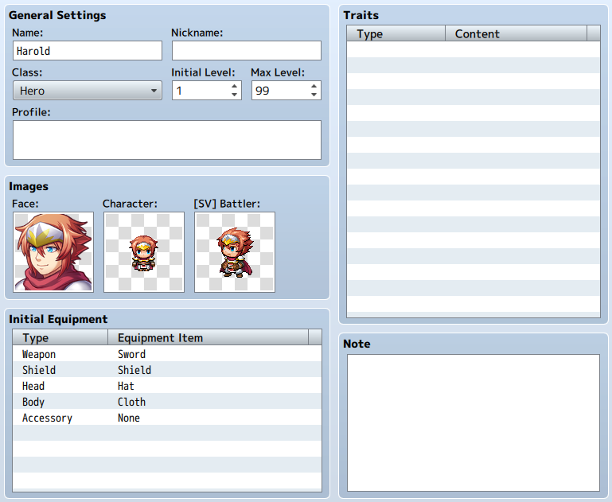

Actor Settings
Role of Data
Data which represents the character that the player controls is the actor data.
You can give each actor unique characteristics.
Property Details

- Name
- [Name] is the name that is displayed during gameplay. There are occasions when the player name will not be fully visible during gameplay and in battle if the name is long.
- Nickname
- The nickname of the actor. This will be displayed on the status screen in the upper right.
- Class
- The class which the actor belongs to. This will affect which skills can be used, which weapons can be equipped, which items can be used, etc. Specific details are edited in the [Class] tab.
- Initial Level/ Max Level
- [Initial Level] is the level of the actor at the start of game, and [Max Level] is the maximum level an actor can be. An actor will never level up beyond its [Max Level]. Either can be set from 1 to 99.
- Profile
- Introduction of the actor. This will be displayed on the lower portion of the Status Screen.
- Images
-
- Face
- Image displayed in the menu.
- Character
- Image displayed on the Map Screen.
- [SV] Battler
- Image displayed in the Battle Screen when in Side-view mode.
- Initial Equipment
- The equipment that an actor starts with at the start of the game. Select the equipment position for each piece from the pull-down list. Equipment which can be selected is limited to what their class is able to equip. Setting this to [None] will cause nothing to be equipped in that location.
- Traits
- The actor's unique traits. Define the details in the window that is displayed when double-clicking each row of the settings field. For more information please refer to [How to Set Traits].
- Note
- The [Note] section can be used to make notes while making your game.
Right-click to show the menu and choose [Plugin Help...] to display the Plugin Help.
（March 1st, 2016 Update）